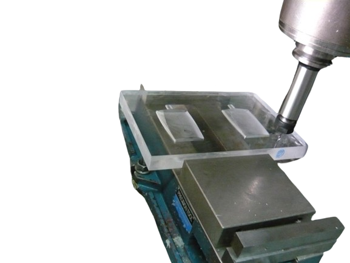
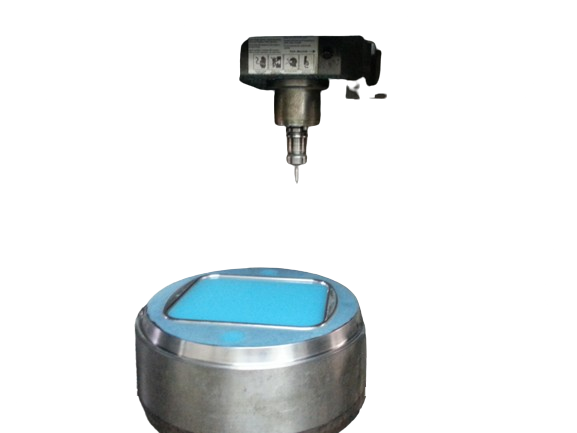

Servicios de creación de moldes a medida establecida

Diseño de Producto

Diseño de Moldes

Fab. moldes > Inyección

Fab. moldes > Termoformado
Como empresa especializada en diseño y fabricación de moldes a medida, ofrecemos un servicio integral. Trabajamos estrechamente con nuestros clientes para crear modelos 3D y planos técnicos precisos, garantizando que los moldes cumplan con las especificaciones exactas. Además, brindamos asesoría técnica, control de calidad riguroso y soporte postventa. Somos un socio confiable para soluciones personalizadas y moldes de alta calidad.